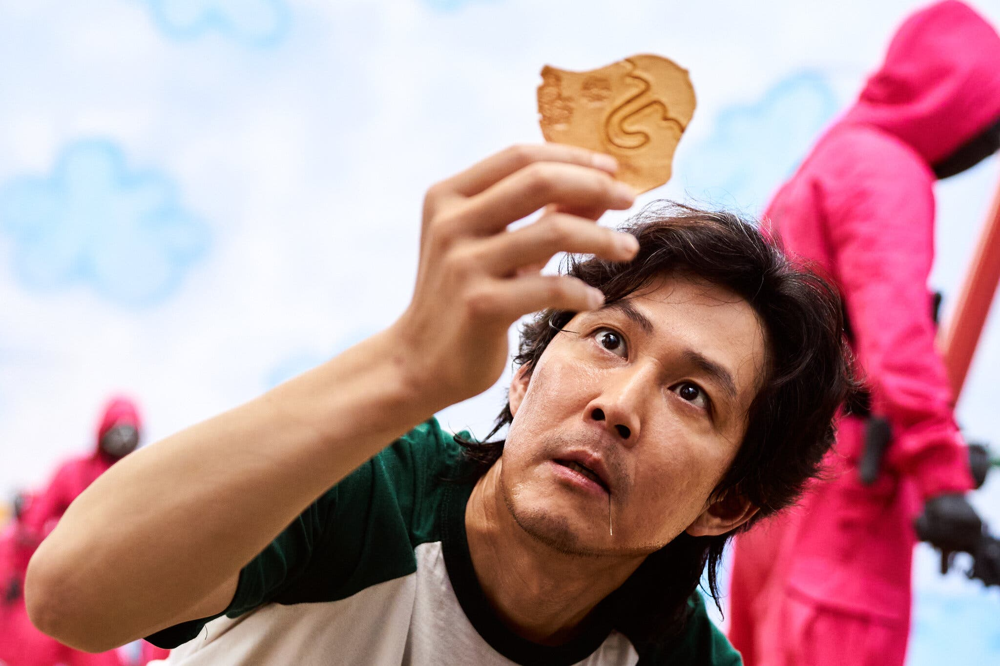

From BTS to Squid Game and award-winning films like Parasite, South Korea has now become a rising star in the entertainment industry. With qualities and content that truly portray the uniqueness of the country, Korean entertainment and media are now also an important factor when it comes to the country's reputation. As a Korean American student who lived in Korea for over 10 years now, these kinds of entertainment have been a huge source of joy in my life, also becoming valuable memories I can share and talk about with other friends to reminisce about our school days.
 My name is Joan Suh, and as a Korean myself I'm confident in introducing the hidden masterpieces that Koreans love when it comes to k-dramas, movies, and k-pop songs. While some of them are already famous by becoming globally viral, some might be very new especially if you're unfamiliar with Korean culture.
You Want some HONEYJAM? Here are some real life hacks to becoming hip in Korea.
*HoneyJam is a different version of a Korean slang word, gguel-jam, which refers to "something very fun." Gguel means honey and jam is a short word for fun in Korean.*